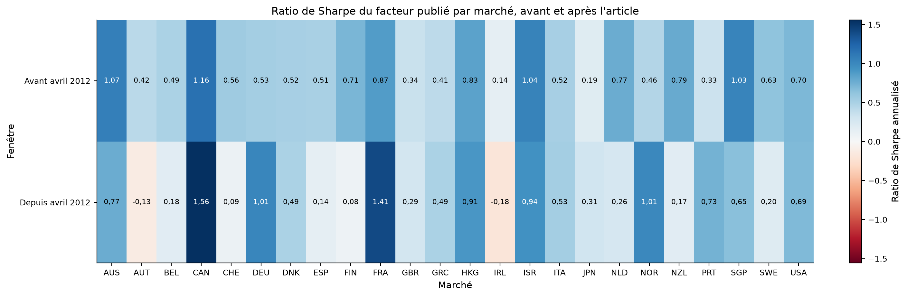
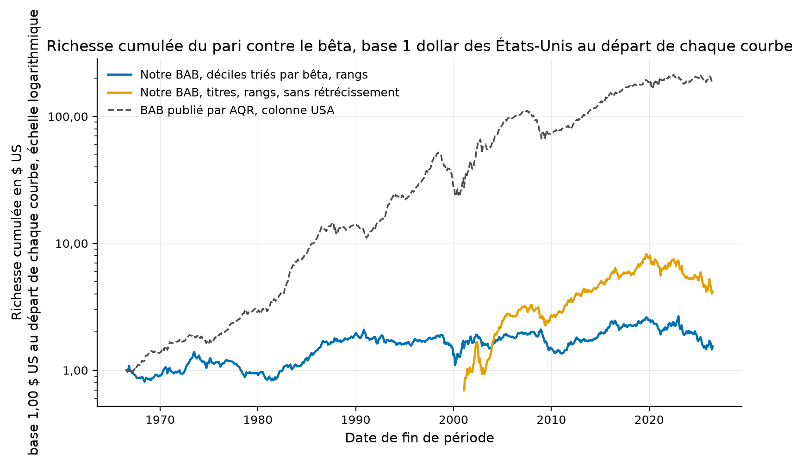
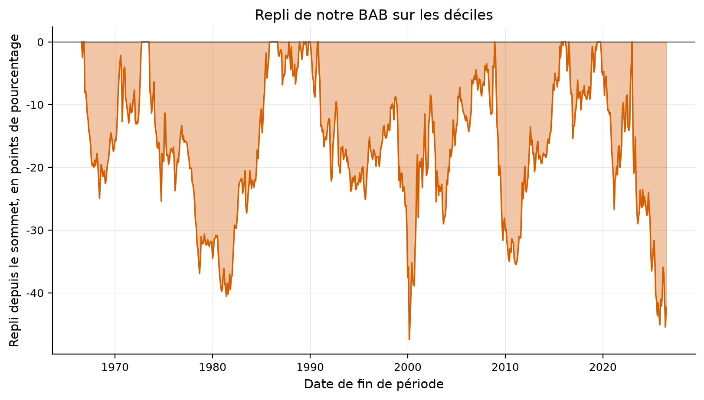
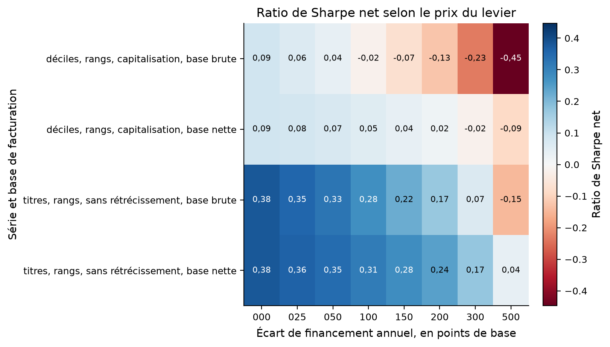
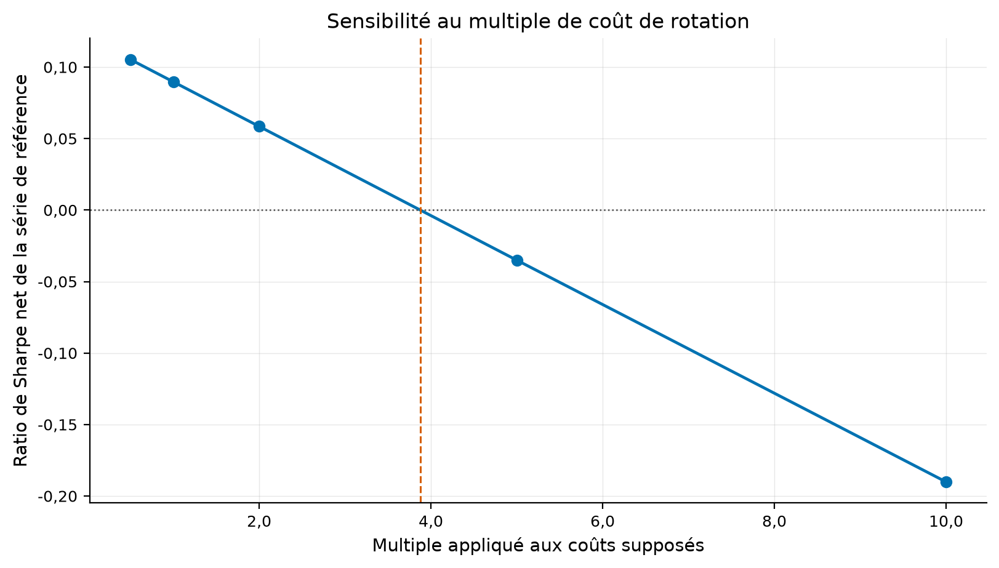
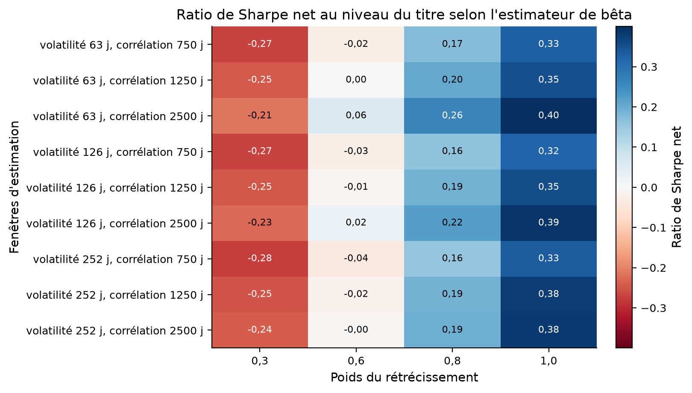
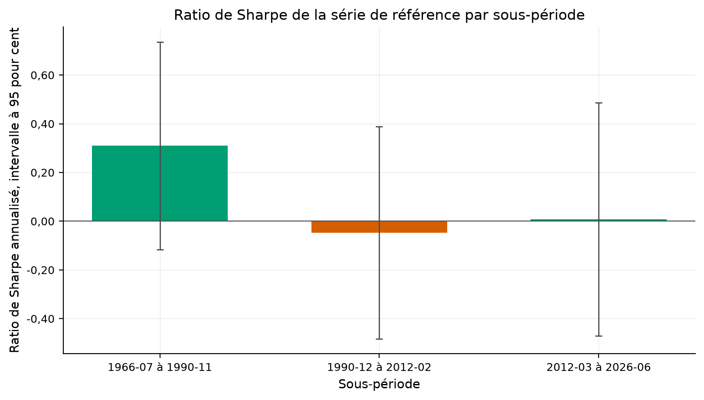
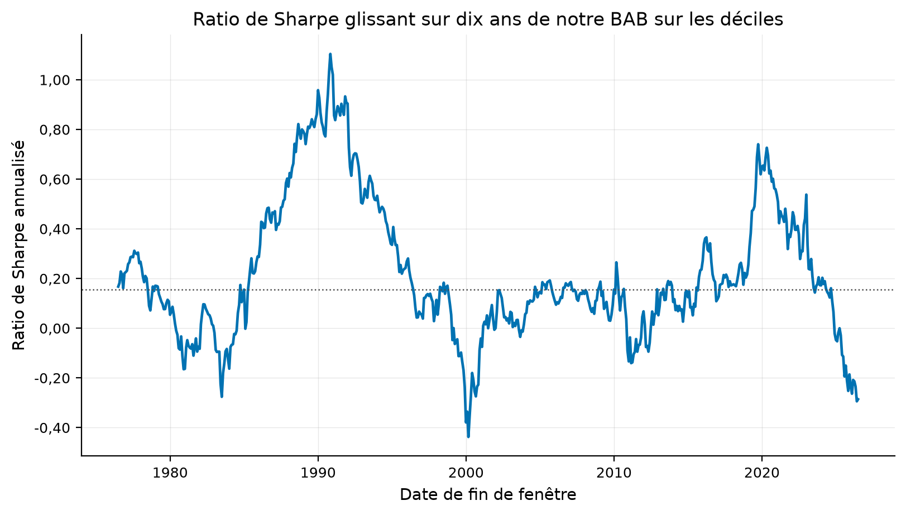
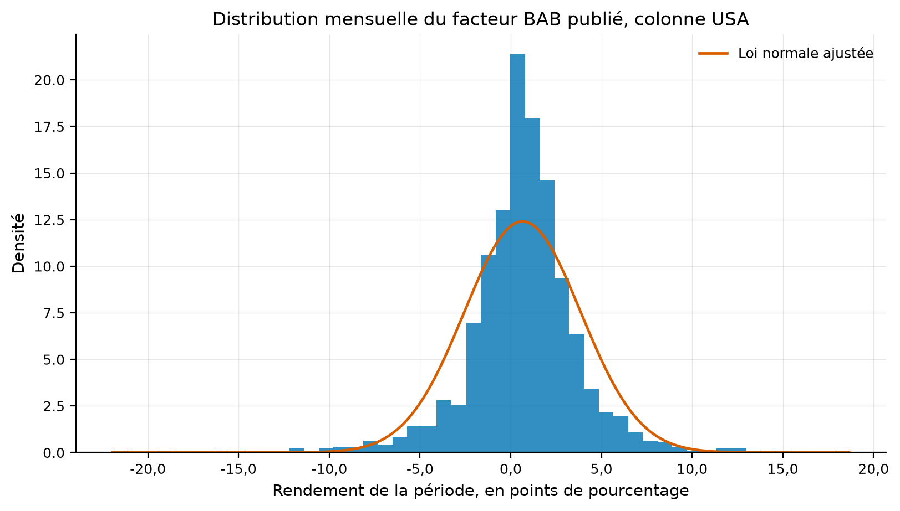
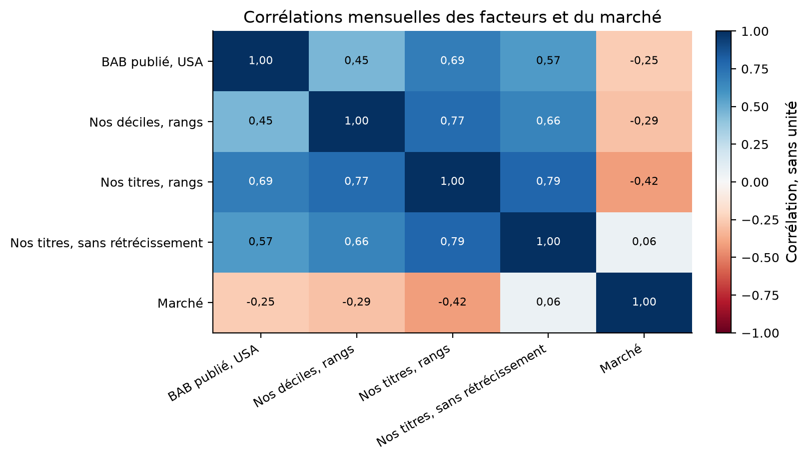

Verdict : REJECTED
Un portefeuille long sur bêta faible et court sur bêta élevé, chaque jambe mise à l'échelle par l'inverse de son bêta, rapporte-t-il un rendement positif de bêta nul ?
Frazzini et Pedersen (2014), Betting against beta, Journal of Financial Economics 111(1). Les chiffres cibles viennent de la version de travail du 2013-05-10.
Le bêta ex ante compose une corrélation à cinq ans sur rendements recouvrants de trois jours et deux volatilités à un an, puis se rétrécit vers un. Les titres sont classés, pondérés par les rangs, et chaque jambe est divisée par son bêta.
Le facteur publié vient du classeur d'AQR. Notre construction emploie les portefeuilles triés par bêta de Kenneth French et les membres actuels du S&P 500.
La stratégie vit dans quantlab.strategies.betting_against_beta. Le décalage d'un mois entre formation et détention se fait en un seul endroit.
| leg | paper | deciles_rank_value | stocks_rank | stocks_rank_no_shrinkage |
|---|---|---|---|---|
| Jambe longue, bêta faible | 1.4 | 1.188155 | 1.366749 | 1.974664 |
| Jambe courte, bêta élevé | 0.7 | 0.788876 | 0.775938 | 0.678336 |
Le levier s'obtient au taux sans risque dans le cas de référence, hypothèse de l'article. Son prix réel est balayé séparément.
Le rendement excédentaire mensuel du facteur publié ressort à 0.6763 pour cent contre 0,70 publié, et son ratio de Sharpe à 0.703 contre 0,78.
| quantity | published | ours | absolute_error | relative_error | tolerance | tolerance_kind | verdict | source |
|---|---|---|---|---|---|---|---|---|
| Rendement excédentaire mensuel, % | 0.7000 | 0.676297 | 0.023703 | 0.033861 | 0.25 | relative | répliqué | Frazzini et Pedersen (2013), tableau III, actions américaines |
| Statistique t du rendement excédentaire | 7.1200 | 6.343180 | 0.776820 | 0.109104 | 0.25 | relative | répliqué | Frazzini et Pedersen (2013), tableau III, actions américaines |
| Volatilité annualisée, % | 10.7000 | 11.538416 | 0.838416 | 0.078357 | 0.25 | relative | répliqué | Frazzini et Pedersen (2013), tableau III, actions américaines |
| Ratio de Sharpe annualisé | 0.7800 | 0.703352 | 0.076648 | 0.098267 | 0.25 | relative | répliqué | Frazzini et Pedersen (2013), tableau III, actions américaines |
| Alpha du modèle à trois facteurs, %/mois | 0.7300 | 0.740716 | 0.010716 | 0.014679 | 0.25 | relative | répliqué | Frazzini et Pedersen (2013), tableau III, actions américaines |
| Alpha du modèle à quatre facteurs, %/mois | 0.5500 | 0.540997 | 0.009003 | 0.016369 | 0.25 | relative | répliqué | Frazzini et Pedersen (2013), tableau III, actions américaines |
| Part de marchés au ratio de Sharpe positif | 0.9474 | 1.000000 | 0.052600 | 0.055520 | 0.25 | relative | répliqué | Frazzini et Pedersen (2013), tableau V |
| Levier de la jambe longue, dollars | 1.4000 | 1.366749 | 0.033251 | 0.023751 | 0.25 | relative | répliqué | Frazzini et Pedersen (2013), page 19 |
| Bêta réalisé de notre facteur reconstruit | 0.0000 | -0.181803 | 0.181803 | inf | 0.15 | absolute | écart | Frazzini et Pedersen (2013), tableau III, bêta ex ante 0,00 |
| window | start | end | n_months | monthly_pct | annual_pct | annual_vol_pct | sharpe | sharpe_se_lo | sharpe_tstat | mean_tstat | max_drawdown_pct | skewness | excess_kurtosis | realized_beta |
|---|---|---|---|---|---|---|---|---|---|---|---|---|---|---|
| Échantillon complet du classeur | 1930-12-31 | 2026-06-30 | 1147.0 | 0.648614 | 7.783371 | 11.142999 | 0.698499 | 0.134357 | 5.198826 | 6.828994 | -54.648023 | -0.669383 | 7.024803 | -0.085199 |
| Jusqu'à la fin de l'article, mars 2012 | 1930-12-31 | 2012-03-31 | 976.0 | 0.676297 | 8.115568 | 11.538416 | 0.703352 | 0.148543 | 4.735001 | 6.343180 | -54.648023 | -0.713181 | 6.996315 | -0.087880 |
| Après l'article, depuis avril 2012 | 2012-04-30 | 2026-06-30 | 171.0 | 0.490610 | 5.887325 | 8.550148 | 0.688564 | 0.257417 | 2.674897 | 2.599273 | -15.250958 | -0.099396 | 2.461376 | -0.056627 |
| Après publication, depuis janvier 2014 | 2014-01-31 | 2026-06-30 | 150.0 | 0.392273 | 4.707275 | 8.863727 | 0.531072 | 0.259687 | 2.045043 | 1.877622 | -15.250958 | -0.024126 | 2.338612 | -0.065710 |
| country | n_months | start | sharpe_full | sharpe_se_lo | tstat_full | annual_pct | test_sharpe_before | test_sharpe_after | test_difference | test_se_difference | test_z | test_pvalue |
|---|---|---|---|---|---|---|---|---|---|---|---|---|
| CAN | 473 | 1987-02-28 | 1.306243 | 0.204157 | 6.398232 | 20.451750 | 1.159494 | 1.557462 | -0.397968 | 0.394249 | -1.009432 | 0.312767 |
| FRA | 449 | 1989-02-28 | 1.035758 | 0.166618 | 6.216346 | 16.616848 | 0.865072 | 1.409042 | -0.543970 | 0.327380 | -1.661587 | 0.096596 |
| ISR | 341 | 1998-02-28 | 0.985289 | 0.189884 | 5.188890 | 14.703672 | 1.035874 | 0.937729 | 0.098145 | 0.389392 | 0.252047 | 0.801005 |
| AUS | 451 | 1988-12-31 | 0.960761 | 0.199030 | 4.827207 | 14.376312 | 1.066463 | 0.769367 | 0.297096 | 0.388316 | 0.765090 | 0.444218 |
| SGP | 449 | 1989-02-28 | 0.896464 | 0.189670 | 4.726437 | 12.021567 | 1.029267 | 0.649161 | 0.380106 | 0.385698 | 0.985502 | 0.324378 |
| HKG | 449 | 1989-02-28 | 0.828045 | 0.205900 | 4.021578 | 17.580872 | 0.832162 | 0.905611 | -0.073449 | 0.439212 | -0.167229 | 0.867190 |
| USA | 1147 | 1930-12-31 | 0.698499 | 0.134357 | 5.198826 | 7.783371 | 0.703352 | 0.688564 | 0.014788 | 0.297201 | 0.049757 | 0.960316 |
| DEU | 449 | 1989-02-28 | 0.684151 | 0.174890 | 3.911900 | 11.568730 | 0.529003 | 1.014786 | -0.485783 | 0.348579 | -1.393611 | 0.163435 |
| NOR | 449 | 1989-02-28 | 0.626048 | 0.188191 | 3.326654 | 12.277349 | 0.456445 | 1.007184 | -0.550738 | 0.362695 | -1.518459 | 0.128899 |
| NLD | 449 | 1989-02-28 | 0.575316 | 0.174362 | 3.299551 | 9.947648 | 0.772075 | 0.262173 | 0.509903 | 0.352248 | 1.447565 | 0.147739 |
| NZL | 449 | 1989-02-28 | 0.575150 | 0.167814 | 3.427306 | 11.630029 | 0.787608 | 0.173224 | 0.614383 | 0.326659 | 1.880811 | 0.059998 |
| FIN | 449 | 1989-02-28 | 0.529139 | 0.156309 | 3.385202 | 10.500544 | 0.705874 | 0.084817 | 0.621057 | 0.316347 | 1.963211 | 0.049622 |
| ITA | 449 | 1989-02-28 | 0.522614 | 0.170569 | 3.063938 | 6.994057 | 0.519633 | 0.532369 | -0.012736 | 0.357440 | -0.035632 | 0.971576 |
| PRT | 425 | 1991-02-28 | 0.509829 | 0.125815 | 4.052217 | 17.050904 | 0.334339 | 0.733740 | -0.399401 | 0.260253 | -1.534668 | 0.124866 |
| DNK | 449 | 1989-02-28 | 0.508075 | 0.182535 | 2.783441 | 8.582462 | 0.517753 | 0.492455 | 0.025298 | 0.358856 | 0.070496 | 0.943799 |
| SWE | 449 | 1989-02-28 | 0.500307 | 0.180001 | 2.779460 | 9.252291 | 0.628519 | 0.204863 | 0.423656 | 0.371168 | 1.141412 | 0.253698 |
| GRC | 417 | 1991-10-31 | 0.438434 | 0.193636 | 2.264221 | 12.511978 | 0.413406 | 0.491156 | -0.077750 | 0.366323 | -0.212244 | 0.831917 |
| CHE | 449 | 1989-02-28 | 0.405221 | 0.148035 | 2.737323 | 6.270324 | 0.558452 | 0.085978 | 0.472473 | 0.301104 | 1.569136 | 0.116616 |
| BEL | 449 | 1989-02-28 | 0.373848 | 0.145067 | 2.577072 | 6.028777 | 0.488028 | 0.175917 | 0.312111 | 0.291180 | 1.071884 | 0.283772 |
| ESP | 449 | 1989-02-28 | 0.357755 | 0.163752 | 2.184744 | 6.016815 | 0.507479 | 0.139098 | 0.368381 | 0.312913 | 1.177261 | 0.239091 |
| GBR | 449 | 1989-02-28 | 0.321947 | 0.215105 | 1.496696 | 4.934458 | 0.343489 | 0.288493 | 0.054997 | 0.425827 | 0.129153 | 0.897237 |
| JPN | 449 | 1989-02-28 | 0.226304 | 0.178045 | 1.271045 | 3.106551 | 0.188951 | 0.314884 | -0.125933 | 0.347285 | -0.362620 | 0.716889 |
| AUT | 449 | 1989-02-28 | 0.212791 | 0.170411 | 1.248696 | 4.859582 | 0.417931 | -0.131191 | 0.549122 | 0.326192 | 1.683433 | 0.092291 |
| IRL | 449 | 1989-02-28 | 0.021223 | 0.167339 | 0.126829 | 0.758458 | 0.144410 | -0.184792 | 0.329202 | 0.327760 | 1.004400 | 0.315186 |
| quantity | published | ours | absolute_error | relative_error | tolerance | tolerance_kind | verdict | source |
|---|---|---|---|---|---|---|---|---|
| Rendement excédentaire mensuel, % | 0.7000 | 0.676297 | 0.023703 | 0.033861 | 0.25 | relative | répliqué | Frazzini et Pedersen (2013), tableau III, actions américaines |
| Statistique t du rendement excédentaire | 7.1200 | 6.343180 | 0.776820 | 0.109104 | 0.25 | relative | répliqué | Frazzini et Pedersen (2013), tableau III, actions américaines |
| Volatilité annualisée, % | 10.7000 | 11.538416 | 0.838416 | 0.078357 | 0.25 | relative | répliqué | Frazzini et Pedersen (2013), tableau III, actions américaines |
| Ratio de Sharpe annualisé | 0.7800 | 0.703352 | 0.076648 | 0.098267 | 0.25 | relative | répliqué | Frazzini et Pedersen (2013), tableau III, actions américaines |
| Alpha du modèle à trois facteurs, %/mois | 0.7300 | 0.740716 | 0.010716 | 0.014679 | 0.25 | relative | répliqué | Frazzini et Pedersen (2013), tableau III, actions américaines |
| Alpha du modèle à quatre facteurs, %/mois | 0.5500 | 0.540997 | 0.009003 | 0.016369 | 0.25 | relative | répliqué | Frazzini et Pedersen (2013), tableau III, actions américaines |
| Part de marchés au ratio de Sharpe positif | 0.9474 | 1.000000 | 0.052600 | 0.055520 | 0.25 | relative | répliqué | Frazzini et Pedersen (2013), tableau V |
| Levier de la jambe longue, dollars | 1.4000 | 1.366749 | 0.033251 | 0.023751 | 0.25 | relative | répliqué | Frazzini et Pedersen (2013), page 19 |
| Bêta réalisé de notre facteur reconstruit | 0.0000 | -0.181803 | 0.181803 | inf | 0.15 | absolute | écart | Frazzini et Pedersen (2013), tableau III, bêta ex ante 0,00 |

Toutes les versions portent leur échantillon et leur base de coût dans les tableaux.
| metric | value | sample | cost_basis |
|---|---|---|---|
| rendement_mensuel_publie_pct | 6.762973e-01 | IS | gross |
| sharpe_publie_in_sample | 7.033520e-01 | IS | gross |
| sharpe_publie_hors_echantillon | 6.885642e-01 | OOS | gross |
| part_de_marches_positifs | 1.000000e+00 | IS | gross |
| sharpe_deciles_reference | 1.209166e-01 | VALIDATION | gross |
| sharpe_titres_reference | -1.013460e-03 | VALIDATION | gross |
| sharpe_titres_sans_retrecissement | 3.943823e-01 | VALIDATION | gross |
| beta_realise_reference | -1.818025e-01 | VALIDATION | gross |
| sharpe_hors_echantillon_net | -1.629140e-03 | OOS | net |
| ecart_de_financement_qui_annule_le_rendement_bps | 3.349605e+02 | VALIDATION | gross |
| ecart_de_financement_qui_annule_lalpha_bps | 1.100333e+02 | VALIDATION | gross |
| ecart_de_financement_qui_annule_lalpha_net_bps | 2.275532e+01 | VALIDATION | net |
| rotation_annualisee | 3.456221e+00 | VALIDATION | gross |
| cout_de_rentabilite_bps | 3.854245e+01 | VALIDATION | gross |
| probabilite_de_surapprentissage | 0.000000e+00 | VALIDATION | gross |
| sharpe_degonfle | 1.196072e-24 | OOS | net |
| t_apres_correction | -6.707437e-03 | OOS | net |
| part_de_sous_periodes_positives | 6.666667e-01 | VALIDATION | net |
| multiple_de_couts_survecu | 3.875836e+00 | VALIDATION | net |
| correlation_avec_le_marche | -2.586247e-01 | VALIDATION | net |
| cpcv_sharpe_moyen | 6.307824e-01 | OOS | gross |
| cpcv_part_de_chemins_negatifs | 0.000000e+00 | OOS | gross |
| ecart_identite_novy_marx | 1.776357e-15 | IS | gross |
| within | across | shrinkage | n_months | monthly_pct | annual_pct | annual_vol_pct | sharpe | sharpe_se_lo | sharpe_tstat | mean_tstat | max_drawdown_pct | skewness | excess_kurtosis | realized_beta | mean_leverage_low | mean_leverage_high | mean_beta_low | mean_beta_high |
|---|---|---|---|---|---|---|---|---|---|---|---|---|---|---|---|---|---|---|
| Capitalisation dans le décile | Rangs, celle de l'article | 0.3 | 720.0 | -0.003140 | -0.037677 | 12.382503 | -0.003043 | 0.132832 | -0.022907 | -0.023569 | -69.841243 | -0.369402 | 2.122668 | -0.377016 | 1.083252 | 0.879841 | 0.924851 | 1.140360 |
| Capitalisation dans le décile | Rangs, celle de l'article | 0.6 | 720.0 | 0.111452 | 1.337426 | 11.060726 | 0.120917 | 0.132362 | 0.913527 | 0.936616 | -47.414878 | -0.449348 | 2.909216 | -0.181803 | 1.188155 | 0.788876 | 0.849701 | 1.280720 |
| Capitalisation dans le décile | Rangs, celle de l'article | 0.8 | 720.0 | 0.190275 | 2.283305 | 10.890398 | 0.209662 | 0.133889 | 1.565939 | 1.624036 | -41.208363 | -0.484257 | 3.270903 | -0.054028 | 1.277013 | 0.739157 | 0.799602 | 1.374293 |
| Capitalisation dans le décile | Rangs, celle de l'article | 1.0 | 720.0 | 0.275015 | 3.300178 | 11.538566 | 0.286013 | 0.139266 | 2.053710 | 2.215446 | -40.792756 | -0.573731 | 3.887205 | 0.081136 | 1.391963 | 0.695956 | 0.749502 | 1.467866 |
| Capitalisation dans le décile | Équipondérée | 0.3 | 720.0 | -0.001572 | -0.018864 | 9.099082 | -0.002073 | 0.131253 | -0.015795 | -0.016059 | -53.615914 | -0.280946 | 2.614664 | -0.274467 | 1.053044 | 0.905983 | 0.951100 | 1.106251 |
| Capitalisation dans le décile | Équipondérée | 0.6 | 720.0 | 0.081447 | 0.977369 | 8.104875 | 0.120590 | 0.129993 | 0.927666 | 0.934088 | -36.435643 | -0.397715 | 3.605030 | -0.130985 | 1.116742 | 0.830725 | 0.902199 | 1.212503 |
| Capitalisation dans le décile | Équipondérée | 0.8 | 720.0 | 0.136296 | 1.635552 | 7.910805 | 0.206749 | 0.131624 | 1.570751 | 1.601472 | -32.892491 | -0.473901 | 4.091461 | -0.038511 | 1.167920 | 0.788079 | 0.869599 | 1.283337 |
| Capitalisation dans le décile | Équipondérée | 1.0 | 720.0 | 0.191596 | 2.299148 | 8.201426 | 0.280335 | 0.137587 | 2.037513 | 2.171467 | -31.766619 | -0.613190 | 4.771799 | 0.055505 | 1.229910 | 0.750139 | 0.836998 | 1.354171 |
| Capitalisation dans le décile | Capitalisation | 0.3 | 720.0 | 0.000961 | 0.011532 | 8.632136 | 0.001336 | 0.131790 | 0.010137 | 0.010348 | -47.949255 | -0.154658 | 2.482419 | -0.262712 | 1.057410 | 0.916808 | 0.947095 | 1.092743 |
| Capitalisation dans le décile | Capitalisation | 0.6 | 720.0 | 0.071435 | 0.857216 | 7.746132 | 0.110664 | 0.131476 | 0.841705 | 0.857198 | -38.175281 | -0.261324 | 3.059545 | -0.126465 | 1.126421 | 0.848678 | 0.894191 | 1.185485 |
| Capitalisation dans le décile | Capitalisation | 0.8 | 720.0 | 0.119157 | 1.429880 | 7.616414 | 0.187737 | 0.134370 | 1.397158 | 1.454202 | -39.129725 | -0.336456 | 3.412503 | -0.036598 | 1.181949 | 0.809493 | 0.858921 | 1.247313 |
| Capitalisation dans le décile | Capitalisation | 1.0 | 720.0 | 0.168276 | 2.019307 | 7.984491 | 0.252904 | 0.141561 | 1.786540 | 1.958984 | -40.078156 | -0.493272 | 4.297913 | 0.056392 | 1.249393 | 0.774286 | 0.823651 | 1.309142 |
| Équipondérée dans le décile | Rangs, celle de l'article | 0.3 | 720.0 | 0.066926 | 0.803109 | 10.015358 | 0.080188 | 0.147145 | 0.544959 | 0.621132 | -50.607405 | -0.982947 | 3.941026 | -0.359845 | 1.064143 | 0.897874 | 0.943398 | 1.121436 |
| Équipondérée dans le décile | Rangs, celle de l'article | 0.6 | 720.0 | 0.196943 | 2.363320 | 8.114925 | 0.291231 | 0.160067 | 1.819434 | 2.255868 | -38.673478 | -1.128325 | 5.299152 | -0.205016 | 1.147903 | 0.823046 | 0.886796 | 1.242872 |
| Équipondérée dans le décile | Rangs, celle de l'article | 0.8 | 720.0 | 0.288183 | 3.458191 | 7.369133 | 0.469281 | 0.175265 | 2.677547 | 3.635031 | -37.817817 | -1.056432 | 5.784728 | -0.102125 | 1.219978 | 0.783157 | 0.849061 | 1.323830 |
| Équipondérée dans le décile | Rangs, celle de l'article | 1.0 | 720.0 | 0.391416 | 4.696990 | 7.351671 | 0.638901 | 0.186418 | 3.427256 | 4.948906 | -39.220915 | -0.674601 | 4.768146 | 0.007479 | 1.312103 | 0.749184 | 0.811326 | 1.404787 |
| Équipondérée dans le décile | Équipondérée | 0.3 | 720.0 | 0.045868 | 0.550419 | 7.481862 | 0.073567 | 0.147491 | 0.498791 | 0.569848 | -42.659860 | -1.122359 | 5.047700 | -0.267648 | 1.042008 | 0.920103 | 0.963562 | 1.093281 |
| Équipondérée dans le décile | Équipondérée | 0.6 | 720.0 | 0.147246 | 1.766946 | 6.160166 | 0.286834 | 0.160866 | 1.783067 | 2.221808 | -33.649496 | -1.389589 | 7.836859 | -0.154363 | 1.097760 | 0.859989 | 0.927125 | 1.186562 |
| Équipondérée dans le décile | Équipondérée | 0.8 | 720.0 | 0.217078 | 2.604939 | 5.651426 | 0.460935 | 0.176174 | 2.616367 | 3.570385 | -28.973580 | -1.396732 | 9.161850 | -0.079074 | 1.145567 | 0.827572 | 0.902833 | 1.248750 |
| Équipondérée dans le décile | Équipondérée | 1.0 | 720.0 | 0.293979 | 3.527749 | 5.651362 | 0.624230 | 0.186729 | 3.342967 | 4.835263 | -30.227369 | -1.041092 | 8.140671 | 0.000225 | 1.205623 | 0.799880 | 0.878541 | 1.310937 |
| Équipondérée dans le décile | Capitalisation | 0.3 | 720.0 | 0.032549 | 0.390583 | 7.229314 | 0.054028 | 0.146356 | 0.369152 | 0.418497 | -41.642964 | -1.063633 | 5.381056 | -0.256697 | 1.046395 | 0.929037 | 0.959318 | 1.082123 |
| Équipondérée dans le décile | Capitalisation | 0.6 | 720.0 | 0.131461 | 1.577533 | 6.028441 | 0.261682 | 0.159100 | 1.644762 | 2.026978 | -32.861806 | -1.272099 | 7.791723 | -0.148037 | 1.106980 | 0.875004 | 0.918637 | 1.164246 |
| Équipondérée dans le décile | Capitalisation | 0.8 | 720.0 | 0.201572 | 2.418859 | 5.593133 | 0.432469 | 0.174209 | 2.482473 | 3.349893 | -28.071969 | -1.223642 | 8.822758 | -0.074630 | 1.158441 | 0.845751 | 0.891516 | 1.218994 |
| Équipondérée dans le décile | Capitalisation | 1.0 | 720.0 | 0.280419 | 3.365032 | 5.670263 | 0.593453 | 0.185171 | 3.204891 | 4.596864 | -29.396529 | -0.847883 | 7.751285 | 0.003586 | 1.222743 | 0.820779 | 0.864395 | 1.273743 |
| across | shrinkage | n_months | monthly_pct | annual_pct | annual_vol_pct | sharpe | sharpe_se_lo | sharpe_tstat | mean_tstat | max_drawdown_pct | skewness | excess_kurtosis | realized_beta | mean_leverage_low | mean_leverage_high | ex_ante_beta_low | realized_beta_low | ex_ante_beta_high | realized_beta_high | mean_n_names | n_missing_returns |
|---|---|---|---|---|---|---|---|---|---|---|---|---|---|---|---|---|---|---|---|---|---|
| Rangs, celle de l'article | 0.3 | 306.0 | -0.329691 | -3.956286 | 16.477084 | -0.240108 | 0.175191 | -1.370551 | -1.212488 | -80.352891 | -0.583965 | 2.391534 | -0.662745 | 1.149012 | 0.872230 | 0.873233 | 0.590026 | 1.149298 | 1.510300 | 422.598039 | 0.0 |
| Rangs, celle de l'article | 0.6 | 306.0 | -0.001259 | -0.015111 | 14.909838 | -0.001013 | 0.178515 | -0.005677 | -0.005118 | -62.224620 | -0.519021 | 2.516159 | -0.401090 | 1.366749 | 0.775938 | 0.746467 | 0.590026 | 1.298596 | 1.510300 | 422.598039 | 0.0 |
| Rangs, celle de l'article | 0.8 | 306.0 | 0.258324 | 3.099888 | 15.199347 | 0.203949 | 0.190078 | 1.072975 | 1.029891 | -56.750063 | -0.452415 | 2.869442 | -0.198880 | 1.589285 | 0.723600 | 0.661956 | 0.590026 | 1.398128 | 1.510300 | 422.598039 | 0.0 |
| Rangs, celle de l'article | 1.0 | 306.0 | 0.619150 | 7.429804 | 18.839091 | 0.394382 | 0.210964 | 1.869433 | 1.991533 | -51.020993 | -0.582390 | 5.695170 | 0.072694 | 1.974664 | 0.678336 | 0.577445 | 0.590026 | 1.497660 | 1.510300 | 422.598039 | 0.0 |
| Équipondérée | 0.3 | 306.0 | -0.173849 | -2.086184 | 11.858577 | -0.175922 | 0.174442 | -1.008487 | -0.888362 | -60.849256 | -0.487131 | 2.162782 | -0.475411 | 1.109926 | 0.913556 | 0.903945 | 0.686332 | 1.097111 | 1.333446 | 422.598039 | 0.0 |
| Équipondérée | 0.6 | 306.0 | 0.055245 | 0.662944 | 10.709508 | 0.061902 | 0.178971 | 0.345878 | 0.312592 | -45.347742 | -0.433175 | 2.193015 | -0.289775 | 1.260085 | 0.843730 | 0.807890 | 0.686332 | 1.194222 | 1.333446 | 422.598039 | 0.0 |
| Équipondérée | 0.8 | 306.0 | 0.233126 | 2.797516 | 10.634949 | 0.263049 | 0.191571 | 1.373114 | 1.328334 | -39.781659 | -0.364563 | 2.222003 | -0.145160 | 1.400290 | 0.803941 | 0.743853 | 0.686332 | 1.258962 | 1.333446 | 422.598039 | 0.0 |
| Équipondérée | 1.0 | 306.0 | 0.459637 | 5.515646 | 12.021021 | 0.458833 | 0.212946 | 2.154691 | 2.316995 | -34.194950 | -0.406439 | 3.039292 | 0.037206 | 1.606265 | 0.768406 | 0.679816 | 0.686332 | 1.323703 | 1.333446 | 422.598039 | 0.0 |


La rotation annualisée vaut 3.46 et le coût qui annule le rendement brut vaut 39 points de base.
| series | basis | spread_bps | net_annual_pct | net_sharpe | alpha_4f_monthly_pct | alpha_tstat |
|---|---|---|---|---|---|---|
| déciles, rangs, capitalisation | net | 0.0 | 0.992284 | 0.089699 | 0.007533 | 0.077982 |
| déciles, rangs, capitalisation | net | 25.0 | 0.892464 | 0.080677 | -0.000743 | -0.007693 |
| déciles, rangs, capitalisation | net | 50.0 | 0.792644 | 0.071653 | -0.009019 | -0.093370 |
| déciles, rangs, capitalisation | net | 100.0 | 0.593005 | 0.053607 | -0.025572 | -0.264732 |
| déciles, rangs, capitalisation | net | 150.0 | 0.393366 | 0.035560 | -0.042124 | -0.436101 |
| déciles, rangs, capitalisation | net | 200.0 | 0.193726 | 0.017513 | -0.058677 | -0.607472 |
| déciles, rangs, capitalisation | net | 300.0 | -0.205552 | -0.018581 | -0.091782 | -0.950210 |
| déciles, rangs, capitalisation | net | 500.0 | -1.004110 | -0.090761 | -0.157991 | -1.635565 |
| déciles, rangs, capitalisation | gross | 0.0 | 0.992284 | 0.089699 | 0.007533 | 0.077982 |
| déciles, rangs, capitalisation | gross | 25.0 | 0.695245 | 0.062849 | -0.017195 | -0.178011 |
| déciles, rangs, capitalisation | gross | 50.0 | 0.398206 | 0.035997 | -0.041923 | -0.434032 |
| déciles, rangs, capitalisation | gross | 100.0 | -0.195871 | -0.017707 | -0.091379 | -0.946159 |
| déciles, rangs, capitalisation | gross | 150.0 | -0.789948 | -0.071412 | -0.140835 | -1.458391 |
| déciles, rangs, capitalisation | gross | 200.0 | -1.384026 | -0.125119 | -0.190292 | -1.970722 |
| déciles, rangs, capitalisation | gross | 300.0 | -2.572180 | -0.232533 | -0.289204 | -2.995655 |
| déciles, rangs, capitalisation | gross | 500.0 | -4.948490 | -0.447355 | -0.487029 | -5.046417 |
| titres, rangs, sans rétrécissement | net | 0.0 | 7.151008 | 0.379608 | 0.291454 | 1.006917 |
| titres, rangs, sans rétrécissement | net | 25.0 | 6.826926 | 0.362515 | 0.264186 | 0.913113 |
| titres, rangs, sans rétrécissement | net | 50.0 | 6.502843 | 0.345407 | 0.236918 | 0.819215 |
| titres, rangs, sans rétrécissement | net | 100.0 | 5.854679 | 0.311150 | 0.182383 | 0.631154 |
| titres, rangs, sans rétrécissement | net | 150.0 | 5.206515 | 0.276841 | 0.127848 | 0.442763 |
| titres, rangs, sans rétrécissement | net | 200.0 | 4.558351 | 0.242486 | 0.073313 | 0.254074 |
| titres, rangs, sans rétrécissement | net | 300.0 | 3.262023 | 0.173658 | -0.035758 | -0.124077 |
| titres, rangs, sans rétrécissement | net | 500.0 | 0.669366 | 0.035667 | -0.253899 | -0.882589 |
| titres, rangs, sans rétrécissement | gross | 0.0 | 7.151008 | 0.379608 | 0.291454 | 1.006917 |
| titres, rangs, sans rétrécissement | gross | 25.0 | 6.657341 | 0.353509 | 0.250029 | 0.864201 |
| titres, rangs, sans rétrécissement | gross | 50.0 | 6.163675 | 0.327390 | 0.208604 | 0.721343 |
| titres, rangs, sans rétrécissement | gross | 100.0 | 5.176343 | 0.275096 | 0.125754 | 0.435224 |
| titres, rangs, sans rétrécissement | gross | 150.0 | 4.189011 | 0.222734 | 0.042905 | 0.148607 |
| titres, rangs, sans rétrécissement | gross | 200.0 | 3.201679 | 0.170312 | -0.039945 | -0.138459 |
| titres, rangs, sans rétrécissement | gross | 300.0 | 1.227014 | 0.065318 | -0.205645 | -0.713739 |
| titres, rangs, sans rétrécissement | gross | 500.0 | -2.722315 | -0.145039 | -0.537043 | -1.867495 |
| series | basis | mean_borrowed | breakeven_spread_bps | alpha_4f_at_zero_pct | alpha_zero_spread_bps | breakeven_spread_net_bps | alpha_4f_at_zero_net_pct | alpha_zero_spread_net_bps |
|---|---|---|---|---|---|---|---|---|
| déciles, rangs, capitalisation | net | 0.399279 | 334.960496 | 0.036426 | 110.033312 | 248.519097 | 0.007533 | 22.755321 |
| déciles, rangs, capitalisation | gross | 1.188155 | 112.563273 | 0.036426 | 36.826932 | 83.514693 | 0.007533 | 7.615954 |
| titres, rangs | net | 0.590811 | -2.557588 | 0.063693 | 128.920548 | -39.734689 | 0.045403 | 91.900216 |
| titres, rangs | gross | 1.366749 | -1.105581 | 0.063693 | 55.797152 | -17.176312 | 0.045403 | 39.774655 |
| titres, rangs, sans rétrécissement | net | 1.296328 | 573.142110 | 0.314712 | 288.539389 | 551.635522 | 0.291454 | 267.215738 |
| titres, rangs, sans rétrécissement | gross | 1.974664 | 376.256512 | 0.314712 | 189.929186 | 362.137861 | 0.291454 | 175.893030 |
| series | annual_turnover | gross_annual_pct | net_annual_pct | gross_sharpe | net_sharpe | breakeven_cost_bps |
|---|---|---|---|---|---|---|
| déciles, rangs, capitalisation | 3.456221 | 1.337426 | 0.992284 | 0.120917 | 0.089699 | 38.542450 |
| titres, rangs | 2.203667 | -0.015111 | -0.234757 | -0.001013 | -0.015744 | 29.854387 |
| titres, rangs, sans rétrécissement | 2.797101 | 7.429804 | 7.151008 | 0.394382 | 0.379608 | 309.359222 |


Trente-six réglages de l'estimateur de bêta sont balayés, puis la fenêtre recouvrante, le délai d'exécution et les sous-périodes.
| hedge | n_months | monthly_pct | annual_pct | annual_vol_pct | sharpe | sharpe_se_lo | sharpe_tstat | mean_tstat | max_drawdown_pct | skewness | excess_kurtosis | realized_beta |
|---|---|---|---|---|---|---|---|---|---|---|---|---|
| leverage | 660.0 | 0.124341 | 1.492092 | 11.184158 | 0.133411 | 0.139288 | 0.957812 | 0.989404 | -47.414878 | -0.455973 | 2.948942 | -0.180484 |
| market_value_weighted | 660.0 | 0.196905 | 2.362857 | 11.734033 | 0.201368 | 0.140923 | 1.428918 | 1.493384 | -48.896865 | -0.351997 | 2.615387 | -0.072229 |
| market_equal_weighted | 660.0 | 0.262343 | 3.148122 | 10.694675 | 0.294363 | 0.145398 | 2.024534 | 2.183058 | -58.638882 | 0.233164 | 5.065291 | -0.072310 |
| volatility_window | correlation_window | estimator | shrinkage_label | shrinkage | n_months | net_sharpe | realized_beta |
|---|---|---|---|---|---|---|---|
| 63 | 750 | volatilité 63 j, corrélation 750 j | 0,3 | 0.3 | 320 | -0.270876 | -0.669809 |
| 63 | 750 | volatilité 63 j, corrélation 750 j | 0,6 | 0.6 | 320 | -0.021933 | -0.401852 |
| 63 | 750 | volatilité 63 j, corrélation 750 j | 0,8 | 0.8 | 320 | 0.172577 | -0.197791 |
| 63 | 750 | volatilité 63 j, corrélation 750 j | 1,0 | 1.0 | 320 | 0.327787 | 0.084239 |
| 63 | 1250 | volatilité 63 j, corrélation 1250 j | 0,3 | 0.3 | 306 | -0.245404 | -0.627907 |
| 63 | 1250 | volatilité 63 j, corrélation 1250 j | 0,6 | 0.6 | 306 | 0.002976 | -0.352858 |
| 63 | 1250 | volatilité 63 j, corrélation 1250 j | 0,8 | 0.8 | 306 | 0.203159 | -0.136737 |
| 63 | 1250 | volatilité 63 j, corrélation 1250 j | 1,0 | 1.0 | 306 | 0.352766 | 0.161959 |
| 63 | 2500 | volatilité 63 j, corrélation 2500 j | 0,3 | 0.3 | 270 | -0.212860 | -0.552283 |
| 63 | 2500 | volatilité 63 j, corrélation 2500 j | 0,6 | 0.6 | 270 | 0.058382 | -0.286185 |
| 63 | 2500 | volatilité 63 j, corrélation 2500 j | 0,8 | 0.8 | 270 | 0.263748 | -0.067249 |
| 63 | 2500 | volatilité 63 j, corrélation 2500 j | 1,0 | 1.0 | 270 | 0.399904 | 0.239044 |
| 126 | 750 | volatilité 126 j, corrélation 750 j | 0,3 | 0.3 | 320 | -0.270848 | -0.686583 |
| 126 | 750 | volatilité 126 j, corrélation 750 j | 0,6 | 0.6 | 320 | -0.027861 | -0.424916 |
| 126 | 750 | volatilité 126 j, corrélation 750 j | 0,8 | 0.8 | 320 | 0.162401 | -0.227118 |
| 126 | 750 | volatilité 126 j, corrélation 750 j | 1,0 | 1.0 | 320 | 0.320023 | 0.046643 |
| 126 | 1250 | volatilité 126 j, corrélation 1250 j | 0,3 | 0.3 | 306 | -0.247127 | -0.644161 |
| 126 | 1250 | volatilité 126 j, corrélation 1250 j | 0,6 | 0.6 | 306 | -0.006915 | -0.375431 |
| 126 | 1250 | volatilité 126 j, corrélation 1250 j | 0,8 | 0.8 | 306 | 0.190038 | -0.166206 |
| 126 | 1250 | volatilité 126 j, corrélation 1250 j | 1,0 | 1.0 | 306 | 0.353129 | 0.120616 |
| 126 | 2500 | volatilité 126 j, corrélation 2500 j | 0,3 | 0.3 | 270 | -0.226553 | -0.574300 |
| 126 | 2500 | volatilité 126 j, corrélation 2500 j | 0,6 | 0.6 | 270 | 0.022411 | -0.317785 |
| 126 | 2500 | volatilité 126 j, corrélation 2500 j | 0,8 | 0.8 | 270 | 0.220457 | -0.109917 |
| 126 | 2500 | volatilité 126 j, corrélation 2500 j | 1,0 | 1.0 | 270 | 0.388217 | 0.170517 |
| 252 | 750 | volatilité 252 j, corrélation 750 j | 0,3 | 0.3 | 320 | -0.277648 | -0.700625 |
| 252 | 750 | volatilité 252 j, corrélation 750 j | 0,6 | 0.6 | 320 | -0.038993 | -0.445017 |
| 252 | 750 | volatilité 252 j, corrélation 750 j | 0,8 | 0.8 | 320 | 0.155302 | -0.252364 |
| 252 | 750 | volatilité 252 j, corrélation 750 j | 1,0 | 1.0 | 320 | 0.331532 | 0.010416 |
| 252 | 1250 | volatilité 252 j, corrélation 1250 j | 0,3 | 0.3 | 306 | -0.252590 | -0.662745 |
| 252 | 1250 | volatilité 252 j, corrélation 1250 j | 0,6 | 0.6 | 306 | -0.015744 | -0.401090 |
| 252 | 1250 | volatilité 252 j, corrélation 1250 j | 0,8 | 0.8 | 306 | 0.188213 | -0.198880 |
| 252 | 1250 | volatilité 252 j, corrélation 1250 j | 1,0 | 1.0 | 306 | 0.379608 | 0.072694 |
| 252 | 2500 | volatilité 252 j, corrélation 2500 j | 0,3 | 0.3 | 270 | -0.242581 | -0.594572 |
| 252 | 2500 | volatilité 252 j, corrélation 2500 j | 0,6 | 0.6 | 270 | -0.003400 | -0.345716 |
| 252 | 2500 | volatilité 252 j, corrélation 2500 j | 0,8 | 0.8 | 270 | 0.194128 | -0.145909 |
| 252 | 2500 | volatilité 252 j, corrélation 2500 j | 1,0 | 1.0 | 270 | 0.381614 | 0.116654 |
| label | start | end | n_observations | total_return | cagr | volatility | sharpe | sharpe_se_iid | sharpe_se_lo | t_stat | max_drawdown | hit_rate |
|---|---|---|---|---|---|---|---|---|---|---|---|---|
| 1966-07 à 1990-11 | 1966-07-31 | 1990-11-30 | 293 | 0.819922 | 0.024827 | 0.093389 | 0.309427 | 0.202778 | 0.217724 | 1.421187 | -0.421521 | 0.552901 |
| 1990-12 à 2012-02 | 1990-12-31 | 2012-02-29 | 255 | -0.246697 | -0.013243 | 0.121768 | -0.047823 | 0.216941 | 0.222234 | -0.215191 | -0.466284 | 0.498039 |
| 2012-03 à 2026-06 | 2012-03-31 | 2026-06-30 | 172 | -0.086999 | -0.006330 | 0.120202 | 0.007863 | 0.264136 | 0.243735 | 0.032262 | -0.460601 | 0.546512 |


Le ratio de Sharpe hors échantillon de la série de référence vaut -0.002, net de dix points de base.
| statistic | value |
|---|---|
| count | 7.000000 |
| mean | 0.630782 |
| median | 0.638901 |
| std | 0.030141 |
| min | 0.571803 |
| max | 0.655138 |
| quantile_low | 0.583800 |
| quantile_high | 0.655138 |
| quantile_low_level | 0.050000 |
| quantile_high_level | 0.950000 |
| negative_share | 0.000000 |

La probabilité de surapprentissage vaut 0.000 et le ratio de Sharpe dégonflé 0.000.
| quantity | n_months | mean | std | slope_on_market_volatility | intercept | r_squared | pvalue |
|---|---|---|---|---|---|---|---|
| moyenne transversale | 307 | 1.002510 | 0.162545 | -18.335955 | 1.210463 | 0.299972 | 1.984902e-25 |
| dispersion | 307 | 0.423942 | 0.090324 | -0.942366 | 0.434630 | 0.002566 | 3.764247e-01 |
| within | across | shrinkage | sharpe | tstat | pvalue | adjusted_pvalue | rejected |
|---|---|---|---|---|---|---|---|
| Équipondérée dans le décile | Rangs, celle de l'article | 1.0 | 0.638901 | 3.427256 | 0.000610 | 0.014633 | True |
| Équipondérée dans le décile | Équipondérée | 1.0 | 0.624230 | 3.342967 | 0.000829 | 0.019064 | True |
| Équipondérée dans le décile | Capitalisation | 1.0 | 0.593453 | 3.204891 | 0.001351 | 0.029725 | True |
| Équipondérée dans le décile | Rangs, celle de l'article | 0.8 | 0.469281 | 2.677547 | 0.007416 | 0.155743 | False |
| Équipondérée dans le décile | Équipondérée | 0.8 | 0.460935 | 2.616367 | 0.008887 | 0.177742 | False |
| Équipondérée dans le décile | Capitalisation | 0.8 | 0.432469 | 2.482473 | 0.013047 | 0.247900 | False |
| Capitalisation dans le décile | Rangs, celle de l'article | 1.0 | 0.286013 | 2.053710 | 0.040004 | 0.720067 | False |
| Capitalisation dans le décile | Équipondérée | 1.0 | 0.280335 | 2.037513 | 0.041599 | 0.720067 | False |
| Équipondérée dans le décile | Capitalisation | 0.6 | 0.261682 | 1.644762 | 0.100019 | 1.000000 | False |
| Équipondérée dans le décile | Capitalisation | 0.3 | 0.054028 | 0.369152 | 0.712015 | 1.000000 | False |
| Équipondérée dans le décile | Équipondérée | 0.6 | 0.286834 | 1.783067 | 0.074575 | 1.000000 | False |
| Équipondérée dans le décile | Équipondérée | 0.3 | 0.073567 | 0.498791 | 0.617927 | 1.000000 | False |
| Équipondérée dans le décile | Rangs, celle de l'article | 0.6 | 0.291231 | 1.819434 | 0.068845 | 1.000000 | False |
| Capitalisation dans le décile | Rangs, celle de l'article | 0.3 | -0.003043 | -0.022907 | 0.981724 | 1.000000 | False |
| Capitalisation dans le décile | Capitalisation | 0.8 | 0.187737 | 1.397158 | 0.162366 | 1.000000 | False |
| Capitalisation dans le décile | Capitalisation | 0.6 | 0.110664 | 0.841705 | 0.399953 | 1.000000 | False |
| Capitalisation dans le décile | Capitalisation | 0.3 | 0.001336 | 0.010137 | 0.991912 | 1.000000 | False |
| Capitalisation dans le décile | Équipondérée | 0.8 | 0.206749 | 1.570751 | 0.116240 | 1.000000 | False |
| Capitalisation dans le décile | Équipondérée | 0.6 | 0.120590 | 0.927666 | 0.353581 | 1.000000 | False |
| Capitalisation dans le décile | Équipondérée | 0.3 | -0.002073 | -0.015795 | 0.987398 | 1.000000 | False |
| Capitalisation dans le décile | Rangs, celle de l'article | 0.8 | 0.209662 | 1.565939 | 0.117363 | 1.000000 | False |
| Capitalisation dans le décile | Rangs, celle de l'article | 0.6 | 0.120917 | 0.913527 | 0.360965 | 1.000000 | False |
| Équipondérée dans le décile | Rangs, celle de l'article | 0.3 | 0.080188 | 0.544959 | 0.585782 | 1.000000 | False |
| Capitalisation dans le décile | Capitalisation | 1.0 | 0.252904 | 1.786540 | 0.074012 | 1.000000 | False |
| family | n_trials |
|---|---|
| legA_windows | 4 |
| legA_countries | 24 |
| legB_deciles | 24 |
| legB_stocks | 8 |
| hedge | 3 |
| financing | 32 |
| cost_multiple | 5 |
| sweep | 36 |
| overlap | 4 |
| delay | 3 |
| base | 1 |
| TOTAL | 144 |

Le facteur publié est régressé sur un, trois, quatre et six facteurs de Kenneth French, dans l'échantillon de l'article puis après lui.
| model | n_months | alpha_monthly_pct | alpha_tstat | r_squared | beta_MKT-RF | beta_SMB | beta_HML | beta_MOM | beta_RMW | beta_CMA |
|---|---|---|---|---|---|---|---|---|---|---|
| un facteur, échantillon de l'article | 976 | 0.732633 | 6.891457 | 0.020480 | -0.087880 | |||||
| trois facteurs, échantillon de l'article | 976 | 0.740716 | 6.928124 | 0.021165 | -0.083133 | -0.001004 | -0.024952 | |||
| quatre facteurs, échantillon de l'article | 976 | 0.540997 | 5.112886 | 0.089258 | -0.036508 | 0.003087 | 0.073355 | 0.204829 | ||
| six facteurs, échantillon de l'article | 585 | 0.189900 | 1.510390 | 0.319442 | 0.113798 | 0.167770 | 0.303184 | 0.147477 | 0.591582 | 0.467419 |
| un facteur, après l'article | 171 | 0.551704 | 2.836149 | 0.009356 | -0.056627 | |||||
| trois facteurs, après l'article | 171 | 0.536573 | 2.739120 | 0.022270 | -0.048840 | -0.041306 | 0.080054 | |||
| quatre facteurs, après l'article | 171 | 0.378382 | 2.031339 | 0.147283 | 0.015455 | 0.023361 | 0.164517 | 0.268784 | ||
| six facteurs, après l'article | 171 | 0.345171 | 1.967976 | 0.254234 | 0.024768 | 0.181091 | 0.080628 | 0.299242 | 0.386060 | 0.128902 |

L'univers de titres est celui d'aujourd'hui, donc il porte un biais de survie. Les portefeuilles triés par bêta ne sont publiés qu'en fréquence mensuelle.
Le meilleur écart de pondération mesuré vaut 0.639 de ratio de Sharpe, et le verdict est déduit par decide_verdict depuis les seuils écrits avant les résultats.
REJECTED